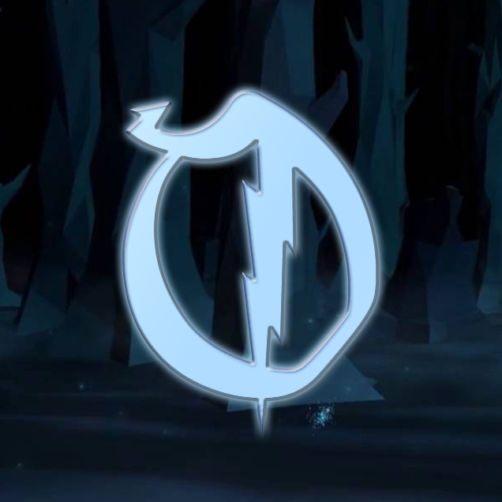

We are an in-development Harry Potter-themed Minecraft community. As this type of server has had many different iterations before, we differ ourselves by setting ourselves in the Marauder's Era (essentially, the 1970's, when James Potter, Severus Snape, Sirius Black, and the other Marauders attended Hogwarts).
We will deliver on that promise through our detailed builds, immersive lore which intertwines with a storyline that you get to forge for yourself, and simple yet effective plugins (that I can't even begin to explain) to make anyone who joins feel as if they've stepped foot in the Wizarding World. Content-wise, what I can tell you is that we plan on featuring Hogwarts and Ilvermorny Schools of Witchcraft and Wizardry.
I would also like to personally inform the players that we intend on being extremely transparent with our members, as to give everyone a feel for the server as it is developing. Expect frequent updates, previews, and events as our thanks for being part of the community!
When are you planning to release?
We do not have a set date, but hope to release within a year or two. We will be having frequent previews and beta testing of certain aspects of the server, found in our Discord.
How can I apply for staff?
You can apply for staff in the apply tab of our website! Please keep in mind that some applications may not be open, or you may not be accepted first time. Don't let this discourage you as you can always re-apply!
Are there other ways I can help with the server?
Yes! You can do several things, including but not limited to: spreading the word, inviting members to our platforms, and supporting all the hard work our team does.
Can't find your question? Feel free to login to our Discord server and access our #support channel!
Welcome to Obscurus!
We will deliver on that promise through our detailed builds, immersive lore which intertwines with a storyline that you get to forge for yourself, and simple yet effective plugins (that I can't even begin to explain) to make anyone who joins feel as if they've stepped foot in the Wizarding World. Content-wise, what I can tell you is that we plan on featuring Hogwarts and Ilvermorny Schools of Witchcraft and Wizardry.
I would also like to personally inform the players that we intend on being extremely transparent with our members, as to give everyone a feel for the server as it is developing. Expect frequent updates, previews, and events as our thanks for being part of the community!
F.A.Q
We do not have a set date, but hope to release within a year or two. We will be having frequent previews and beta testing of certain aspects of the server, found in our Discord.
How can I apply for staff?
You can apply for staff in the apply tab of our website! Please keep in mind that some applications may not be open, or you may not be accepted first time. Don't let this discourage you as you can always re-apply!
Are there other ways I can help with the server?
Yes! You can do several things, including but not limited to: spreading the word, inviting members to our platforms, and supporting all the hard work our team does.
Can't find your question? Feel free to login to our Discord server and access our #support channel!